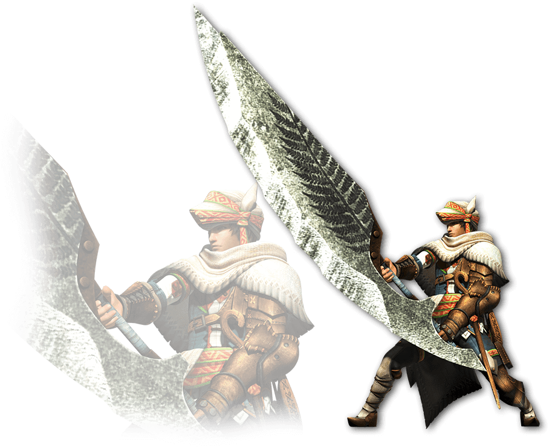
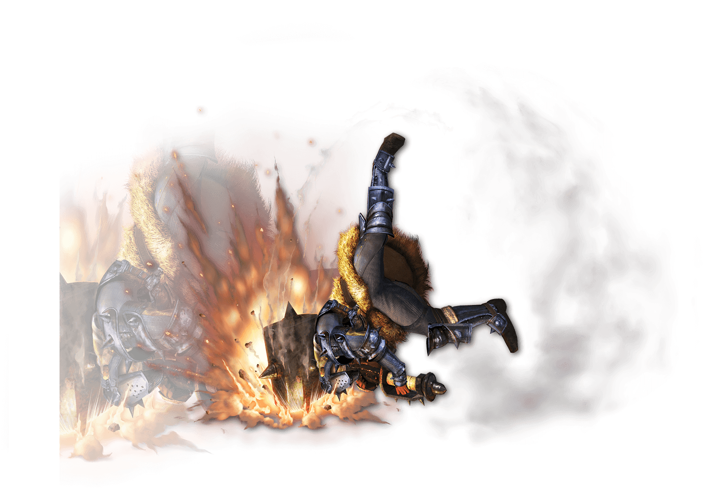
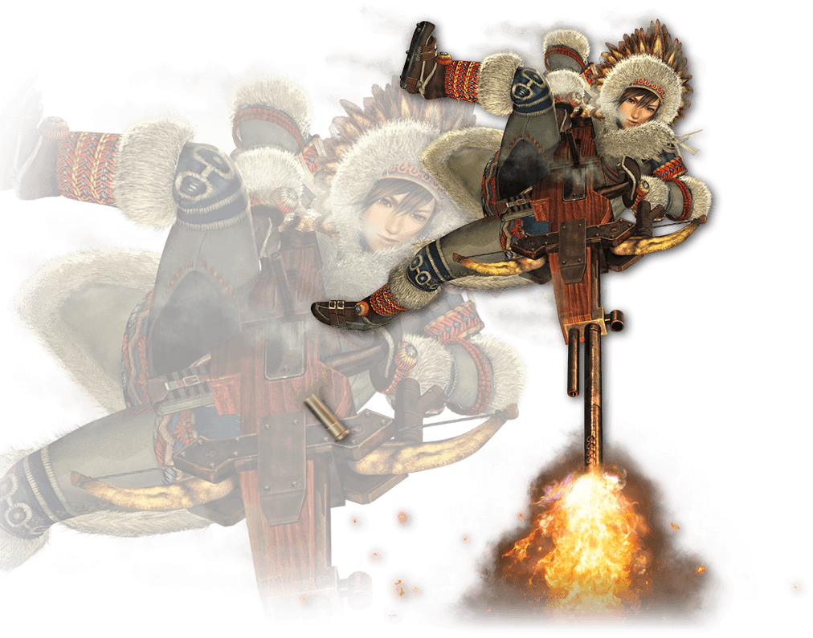
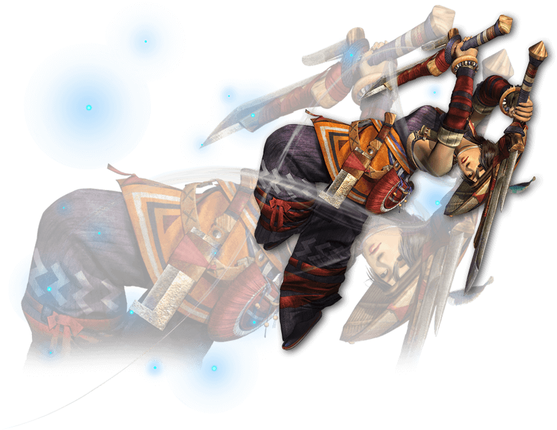

狩猟スタイル
狩猟スタイルとは今作からの新しいシステムで、プレイヤーは４つのスタイルから狩りにあわせて選ぶ
ギルドスタイル
従来の操作方法と変わらない基本のスタイル
やりなれた操作でプレイしたい人でも安心
しかし、特化しているものがなく、物足りないと感じてしまうかも
ストライカースタイル
狩技に特化したスタイル
狩技を最も多く装備でき（3つ）
狩技ゲージの溜まりも早い
しかし、大剣の溜め強（溜め斬り後にXボタン）やハンマーのかち上げ（Xボタン３連撃目）
が使えなかったりと、ギルドスタイルと比べると攻撃の種類が減る
エリアルスタイル
空中戦を得意とするスタイル
回避行動が跳躍に変わり、跳躍の時に物に触れると、踏みつけ跳躍が可能
剣士・ガンナーともに空中での攻撃が可能
空中攻撃で乗りもできる
しかし、陸での戦闘は苦手で、大剣の溜め斬り（X長押し）ができなかったりするが、
空中での溜め斬りは可能
ブシドースタイル
回避になれた玄人向けのスタイル
ジャスト回避（orガード）をすることで長距離移動をし、反撃を得意とする
無敵時間も見た感じ長そう
ジャスト回避後には回避ダッシュが可能で、初撃は威力が増し、武器によっては専用攻撃が追加